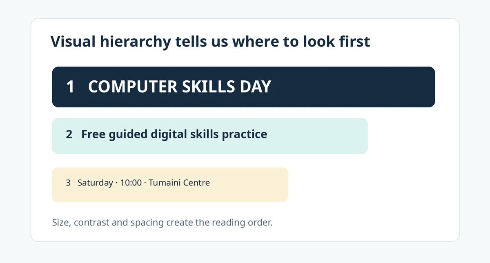
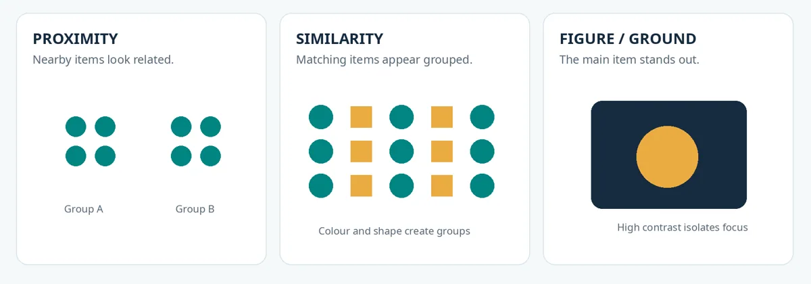
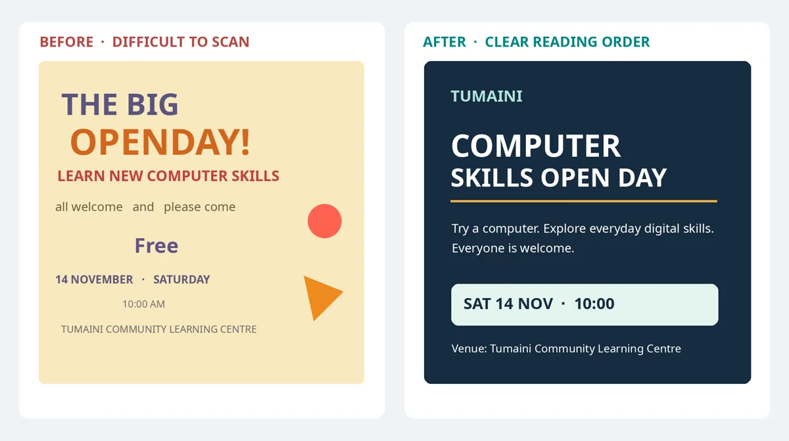
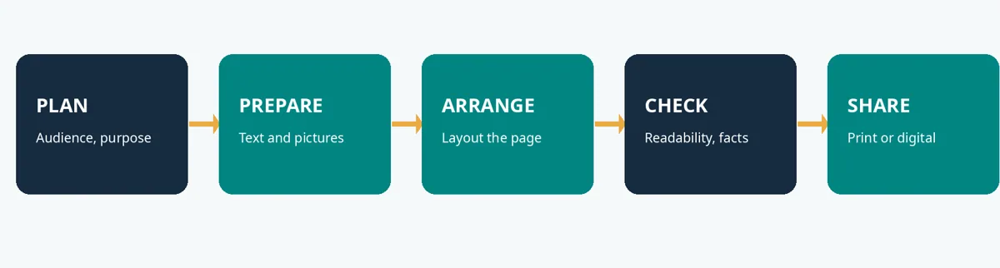

Introduction to Desktop Publishing and Visual Communication
Discover how text, pictures and page layout communicate ideas clearly.
Lecture notes
| Starting point No specialist design software is needed for this lecture. We begin with the posters, notices, brochures and hand-outs people see in daily life. |
|---|
Learning outcomes
After studying this lecture, you should be able to explain desktop publishing and its everyday applications; describe what makes a message visually clear; use four basic design principles when reviewing a page; and suggest improvements to a poorly arranged notice.
1. What desktop publishing means
Desktop publishing (DTP) is the process of using computer software to arrange text, images and other visual elements into a publication that is ready to print or share digitally. The result may be a simple class notice, an event poster, a brochure, a certificate or a small booklet. What makes it desktop publishing is not the complexity of the software but the deliberate preparation of a readable and purposeful finished document.
For instance, a college department may need a notice about registration. Someone must select the necessary information, decide which details deserve attention first, organise the text, perhaps add a logo, and produce a file that displays or prints correctly. These decisions form part of desktop publishing.
1.1 DTP compared with ordinary typing
Typing focuses on entering and editing words. Desktop publishing goes further by deciding how those words and any related graphics will appear together. Modern word processors can also create attractive publications, so the distinction concerns the emphasis of the task rather than a rigid boundary between applications.
| Mostly typing and editing | Publishing and visual communication |
|---|---|
| Enter text, correct spelling and organise paragraphs. | Choose information, organise page elements, establish a reading order and prepare final output. |
| Typical output: a letter or a plain report. | Typical output: a poster, brochure, newsletter or illustrated hand-out. |
2. Where desktop publishing is used
Desktop publishing is useful wherever information must reach readers clearly. Colleges prepare learning materials, timetables and examination notices. Community groups produce event announcements and information leaflets. Businesses develop price lists, menus and product brochures. The same basic skills also help when designing graphics that people read on phones.
| Publication | Main purpose | One design priority |
|---|---|---|
| Notice or poster | Communicate an event or announcement quickly. | Make the event, date and place easy to find. |
| Brochure | Introduce an organisation or service. | Organise information into meaningful sections. |
| Hand-out | Help readers learn or follow a procedure. | Use readable headings, short explanations and helpful images. |
| Newsletter | Present updates to a regular audience. | Keep sections and formatting consistent. |
| Digital graphic | Share a short message on a screen. | Ensure words remain legible at smaller sizes. |
2.1 A short history
Before personal-computer publishing, pages were commonly prepared through specialised typesetting and manual production methods. During the 1980s, personal computers, page-layout applications and laser printers made it increasingly practical for smaller organisations to prepare their own publications. Later, digital photography, PDF documents and online distribution extended desktop publishing beyond paper. Today, a publication may be designed for printing, screen viewing or both.
3. What visual communication means
Visual communication is the process of conveying information or ideas through the appearance and arrangement of words, pictures, shapes, symbols, colours and space. It helps a reader understand not only what a message says, but also where to begin, which details matter most and what action may be required.
A correct message can still fail if the date is hidden, the writing is too small or unrelated items are crowded together. Good visual communication therefore requires attention to content and presentation. Decoration alone cannot rescue inaccurate or missing information.
3.1 Know the audience, message and desired action
A useful starting point is to ask three questions. Who will read this publication? What must they understand? What should they do afterwards? A digital-skills open-day poster, for example, may target students and nearby residents. Its central message is that a free learning event is available. The required action may be to attend at a stated time and venue. These answers help determine which information appears in the largest type.
| Check your own design If someone looks at your poster for only five seconds, will they recognise its main purpose and find the most important detail? |
|---|
4. Characteristics of effective visual communication
Clarity means that the main message can be understood without unnecessary effort. Accuracy means that names, dates, times and other facts are correct. Suitability means that the words and visual style match the intended readers. Readability means that text is large enough, legible and supported by adequate contrast. Consistency means that similar elements—such as section headings—look related throughout the publication.
Another important quality is visual hierarchy. Visual hierarchy is the intentional ordering of information through changes in size, weight, position, contrast and spacing. A large headline normally attracts attention before a smaller explanatory sentence. A date may then appear in a highlighted box so that readers can find it quickly.

Figure 1. A headline, supporting message and key event details arranged in a deliberate reading order.
5. Four basic principles for arranging a page
5.1 Contrast
Contrast means making elements visibly different so that important information stands out. A dark heading on a light background is usually easier to read than a pale heading on a similarly pale background. Contrast can also be created by varying size, weight or shape. Strong contrast should communicate priority, not produce unnecessary visual noise.
5.2 Alignment
Alignment means placing related elements along consistent lines or edges. When a title, paragraph and date box begin at the same left margin, the page looks more orderly. Alignment also helps readers scan content because they can predict where information starts. Randomly centred, left-aligned and right-aligned text often makes a notice harder to follow.
5.3 Proximity
Proximity means placing related information near each other and separating unrelated groups. An event date should appear near its time and venue, while contact information can form its own group. This arrangement reduces the effort needed to understand relationships between pieces of information.
5.4 Repetition
Repetition means reusing visual features such as heading styles, spacing, shapes or colours. If all section headings use the same typeface and colour, readers recognise them as belonging to the same category. Repetition creates consistency, but too much repetition without contrast can make a page monotonous.
5.5 Whitespace supports every principle
Whitespace is the space around and between page elements. It does not have to be white in colour. Proper spacing allows important information to breathe, separates groups and prevents the page from feeling crowded. Leaving space unused is not necessarily wasting space; it can make the message easier to understand.
6. A first look at Gestalt principles
Gestalt principles describe patterns in how people tend to perceive visual elements as groups or complete forms. For introductory desktop publishing, three ideas are especially useful. Proximity makes nearby items appear related. Similarity makes items with the same colour or shape seem to belong together. Figure–ground organisation helps us distinguish the main subject from its background.

Figure 2. Simple examples of grouping by proximity and similarity, and separating a subject from its background.
These ideas are not rigid laws that automatically guarantee good design. They are practical ways of checking whether a page communicates relationships clearly. Later lectures will apply them to text, graphics and layouts.
7. Comparing a confusing and a clearer notice
The two fictional notices below contain similar information about an open day. In the first, inconsistent alignment, competing colours and scattered details make the reading order uncertain. In the second, a clear headline, grouped details and controlled contrast direct attention from the event name to the date, place and supporting explanation.

Figure 3. The same event information arranged with different degrees of clarity. The event details are fictional teaching examples.
When assessing a design, avoid saying only that one version “looks nicer”. Give reasons. You might explain that the improved version is easier to scan because the headline is prominent, the details are grouped, and the text is aligned consistently.
8. A simple desktop publishing workflow
Most publishing tasks follow a sequence: first plan the message and audience; then prepare accurate words and suitable visuals; arrange them on the page; check reading order, spelling and output settings; and finally save, export or print the publication. These stages may overlap, but reviewing the result before sharing is always important.

Figure 4. Five practical stages of creating and sharing a publication.
9. Which software might be used?
Different applications emphasise different tasks. Adobe Photoshop is mainly used for editing raster photographs and image compositions. Adobe Illustrator is particularly suitable for creating scalable vector drawings, icons and logos. Adobe InDesign is designed to arrange text and graphics into publications such as brochures and booklets. Simpler documents can also be made with word processors or other layout tools. Select software by the task, available facilities, cost and output requirements.
| Task | A sensible software choice |
|---|---|
| Crop a photograph for a notice. | A raster-image editor such as Photoshop. |
| Draw an icon that must scale cleanly. | A vector editor such as Illustrator. |
| Arrange an illustrated multi-page booklet. | A page-layout tool such as InDesign. |
10. Try it yourself
Look closely at a notice on a college board, a church announcement, a community poster or a public information leaflet. Identify its audience, main message and intended action. Then write down two strengths and two weaknesses using the language of visual hierarchy, contrast, alignment or proximity. You can sketch improvements on paper; you do not need computer software yet.
11. Key terms and review questions
| Term | Meaning |
|---|---|
| Desktop publishing | Preparing arranged text and graphics as a finished print or digital publication. |
| Visual communication | Conveying information through the appearance and arrangement of visual elements. |
| Visual hierarchy | An intentional reading order created through size, contrast, position and spacing. |
| Alignment | Placing elements along consistent edges or lines. |
| Proximity | Using distance to show which information belongs together. |
| Gestalt | A set of ideas about how visual elements are perceived as groups or organised forms. |
- Explain desktop publishing and name two publications created through it.
- Why should a designer identify the audience before beginning a publication?
- Distinguish ordinary typing from desktop publishing.
- Explain how visual hierarchy guides a reader through an event poster.
- Use an example to distinguish contrast from repetition.
- Explain why proximity and alignment improve the readability of a notice.
- What is whitespace, and why is it useful?
- Identify two Gestalt ideas that may help organise information.
- Suggest three improvements to a poster whose headline, date and contact details are difficult to find.
- Name one suitable application for photo editing, vector artwork and page layout.
Summary
Desktop publishing is the deliberate preparation of a publication, not merely the addition of attractive decoration. A clear publication begins with a reader, a message and an intended action. The designer then uses hierarchy, contrast, alignment, proximity, repetition and spacing to make that message easier to understand. The next lecture will examine text, raster and vector graphics, and basic colour decisions in more detail.
Reference for this lecture: ITT06105 Desktop Publishing Module Guideline (2026/2027), Topic 1 (p. 4) and learning-outcome assessment tasks (pp. 10–11). Further reading: comprehensive course notes L01 and selected visual-design examples from L05.
Simple practical activity
Improve a notice
Choose a notice you have seen at school or in your community. Write its main message and audience, identify two design problems and sketch one clearer version on paper.
Read the full guided practical instructions
| Purpose Practise explaining design decisions using contrast, alignment, proximity and hierarchy. You may complete this worksheet with pencil and paper. |
|---|
Student name: __________________________________________ Date: ___________________
Activity 1 — Read the notice carefully
The fictional poster below advertises a computer-skills event. Study it for one minute before answering the questions. The organisation and event details are used only for teaching.
Who is the likely audience?
____________________________________________________________________________
____________________________________________________________________________
What is the main message?
____________________________________________________________________________
____________________________________________________________________________
Which information is difficult to locate quickly?
____________________________________________________________________________
____________________________________________________________________________
Identify three design problems using the terms contrast, alignment, proximity or hierarchy.
____________________________________________________________________________
____________________________________________________________________________
Activity 2 — Sketch a clearer version
Redesign the poster in the frame below. Include the event name, date, time, venue, a short invitation and one call to action. Start with a strong headline, then group the supporting details. Aim for simple layout rather than decorative complexity.
Activity 3 — Explain your changes
Complete the statements below. Your explanation should describe what changed and why it improves the reader’s experience.
The first item readers should notice is…
____________________________________________________________________________
____________________________________________________________________________
I improved the alignment by…
____________________________________________________________________________
____________________________________________________________________________
I grouped related information by…
____________________________________________________________________________
____________________________________________________________________________
I made the text more readable by…
____________________________________________________________________________
____________________________________________________________________________
Independent follow-up
Find two real notices from your community or campus. On a separate sheet, compare their readability and recommend one improvement for each. Use concepts from Lecture 1 rather than personal preference alone.
Review questions
Try explaining each answer in your own words before using the quiz.
- Explain the difference between ordinary typing and desktop publishing.
- Describe two ways visual hierarchy makes a notice easier to read.
- What changes would you make to a crowded college announcement?